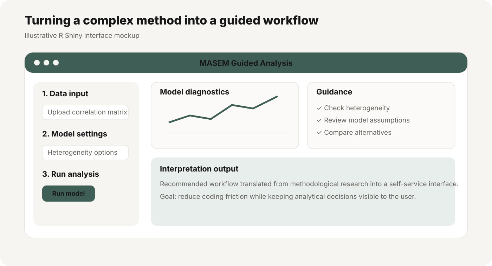

Making complex statistical methods usable.
I turned methodological research on meta-analytic structural equation modeling into a self-service analytics tool. The work has been published, independently cited, used by researchers internationally, and taught in methodological workshops.
A powerful method was hard to apply correctly.
Researchers use meta-analytic structural equation modeling (MASEM) to test models across studies. However, differences among studies can undermine the assumptions behind conventional approaches. Even after understanding the methodological problem, applying more appropriate techniques requires specialized statistical programming.
My goal was not simply to publish a methodological critique. I wanted researchers to have a practical way to use the solution.
From testing assumptions to building an accessible workflow.
I led the methodological research with my coauthors, investigating effect size heterogeneity in MASEM and developing practical guidance. I implemented the statistical R functions, built the Shiny interface, and deployed a public application so researchers could use the workflow without writing the underlying code from scratch.
Examine heterogeneity and model specification.
Test and document the method.
R backend, Shiny interface, public deployment.

Illustrative interface mockup. The linked live application shows the actual product.
The work continued to be used beyond the original papers.
The two first-author Journal of Applied Psychology publications have accumulated approximately 140 citations (based on the reported citation counts). Researchers from multiple continents sought guidance on using the methodology, code, and Shiny application. Professors also independently taught the methodology in international meta-analysis workshops.
Researchers sought help with model specification, bootstrapping, indirect effects, estimation, interpretation, and implementation. These inquiries provide concrete evidence of interest and external engagement; citations alone do not measure software usage.
Leading collaborative research and building the software.
I led the methodological research in collaboration with my coauthors, guiding the development and communication of the approach. My hands-on work included implementing the R functions, building the interactive Shiny interface, deploying the application, and supporting researchers who used the method. The project brought together collaborative methodological research and practical software development.
Publications and technical background
Yu, J., Downes, P. E., Carter, K., & O'Boyle, E. H. (2016). The problem of effect size heterogeneity in meta-analytic structural equation modeling. Journal of Applied Psychology, 101(10), 1457–1473.
Yu, J., Downes, P. E., Carter, K., & O'Boyle, E. H. (2018). The heterogeneity problem in meta-analytic structural equation modeling (MASEM) revisited: A reply to Cheung. Journal of Applied Psychology, 103(7), 804–811.
The product is a specialized research tool rather than a general-purpose commercial SaaS platform. Its impact is best represented through scholarly adoption, documented user engagement, workshops, and a working public application.